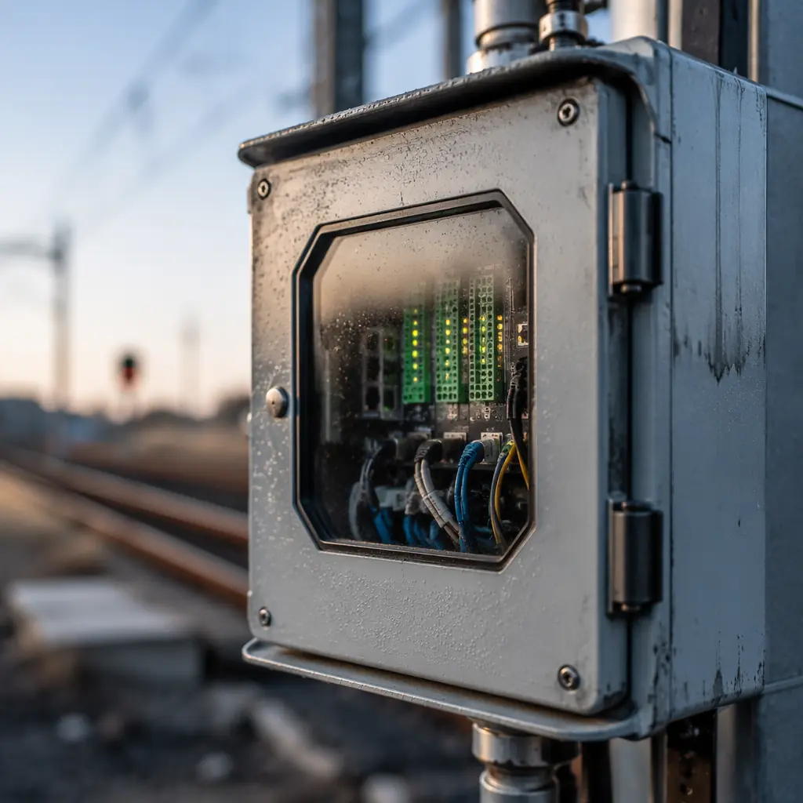
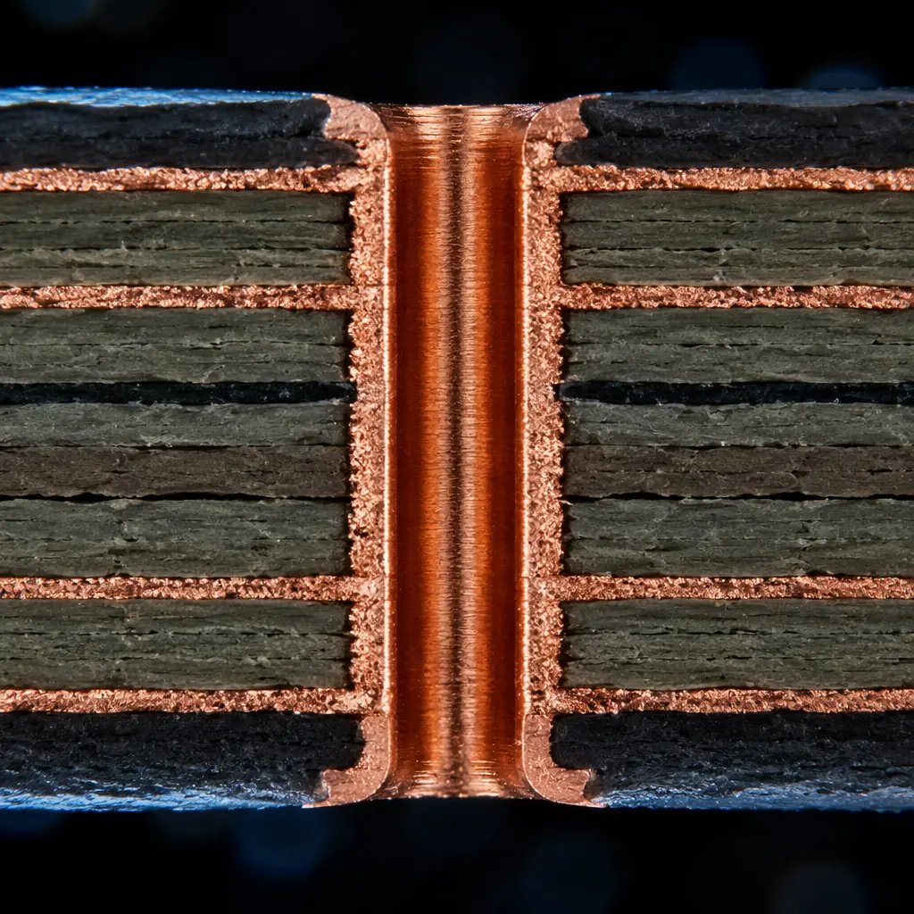
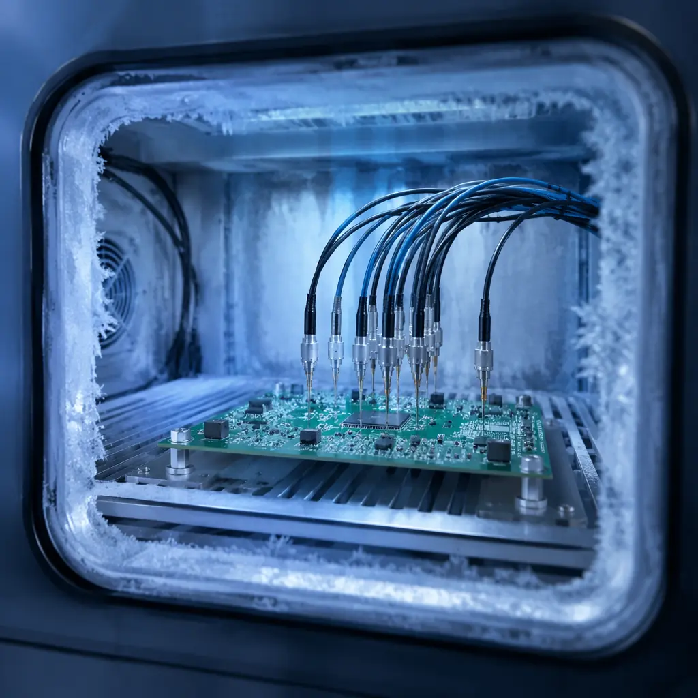

Railway electronics operate in one of the harshest environments in industrial engineering. A PCB inside a trackside signaling cabinet experiences temperature swings of 50°C in a single day, sustained vibration from passing trains at 5-150 Hz, and must maintain fail-safe operation for 20+ years without field replacement. Standard industrial-grade PCBs — even well-made ones — fail predictably under these conditions.
This article covers the PCB-level design rules, material selections, and testing protocols required for railway signaling and train control applications. It is written for electronics engineers and procurement teams supplying signaling OEMs — not for general-interest readers. Every specification references EN 50155, the European standard for electronic equipment used on rolling stock, which has become the de facto global benchmark for rail electronics.
Why Standard Industrial PCBs Fail in Railway Environments

Industrial-grade PCBs are typically designed for -20°C to +70°C ambients, with occasional excursions tolerated but not sustained. Railway applications routinely demand -40°C to +85°C (EN 50155 Class TX, the most demanding category). This is not a minor delta — it is the difference between a solder joint surviving 5 years and surviving 25.
The physics of failure: At -40°C, CTE mismatch between FR-4 substrate (14-16 ppm/°C in Z-axis) and copper plating (17 ppm/°C) places barrel cracks at the top of the failure pyramid. At +85°C with high humidity, CAF (Conductive Anodic Filament) growth accelerates exponentially — a failure mode almost never seen in office-temperature electronics but common in trackside cabinets after 5-7 years of condensation cycling.
Railway PCBs also face mechanical stressors that industrial boards rarely encounter. A signaling cabinet 3 meters from a passing freight train experiences acceleration levels that, while below the threshold for immediate fracture, accumulate fatigue damage in solder joints and plated through-holes over thousands of train-pass events. This is not simulated in standard IPC-TM-650 thermal cycling — it requires railway-specific test profiles.
EN 50155: The Standard That Defines Rail-Grade Electronics
EN 50155 is not a PCB standard — it is a system-level standard for electronic equipment on railway vehicles. However, its requirements cascade directly into PCB design rules across six domains:
Temperature Classes
Class TX mandates -40°C to +85°C ambient operating temperature, with PCB internal temperatures typically 10-15°C above ambient. This pushes FR-4 to its Tg limit: standard FR-4 (Tg 130-140°C) softens above Tg, causing Z-axis expansion that ruptures PTH barrels. High-Tg FR-4 (Tg 170-180°C) is the minimum acceptable substrate. For the most demanding applications — axle counters, balise readers, hot-box detectors — polyimide (Tg 250°C+) is preferred despite its higher cost. Our PCB materials guide covers substrate selection in detail.
Shock and Vibration
EN 50155 references EN 61373 for shock and vibration testing. Category 2 (bogie-mounted) equipment endures 5-150 Hz random vibration at up to 11.4 m/s² RMS. For the PCB, this means: minimum 1.6mm board thickness for rigidity, staggered PTH placement to prevent crack propagation lines, and conformal coating to dampen component lead resonance. Heavy components (>5g) require additional mechanical fixation — adhesive staking or brackets — beyond solder alone.
Humidity and Condensation
Trackside cabinets experience condensation when ambient temperature rises faster than the cabinet interior — a daily occurrence in temperate climates. PCBs must pass 240 hours at 93% RH / 40°C without CAF formation or insulation resistance degradation. This requires: minimum 0.4mm conductor spacing in high-voltage areas, solder mask with >1×10¹² Ω surface insulation resistance, and, critically, no bare copper exposed at solder mask edges — a common defect in boards that pass electrical test but fail humidity aging.
EMC: The Railway-Specific Challenge
Railway signaling operates adjacent to 25 kV AC overhead catenary lines. The induced electromagnetic field at the PCB level can reach field strengths that saturate unshielded analog front-ends. EN 50121-4 specifies railway-specific EMC limits stricter than generic industrial EN 61000 standards. PCB-level mitigations include: 4-layer minimum stackup with dedicated ground plane, guard rings around high-impedance nodes, and — for mixed-signal designs — split ground planes with single-point bridge connection. See our EMC/EMI compliance guide for implementation details.
Supply Voltage Variations
Railway battery systems deliver anywhere from 0.7×Vn to 1.25×Vn (EN 50155 Class S2), with short-duration transients up to 1.4×Vn. For a nominal 24V system, that is 16.8V to 33.6V continuous. PCB power distribution must handle this range without derating; trace widths calculated at nominal voltage will overheat at the upper limit. Minimum 2oz copper on power layers is recommended.
Service Life: 20 Years Minimum
EN 50155 requires a useful life of 20 years for Class L4 equipment. For the PCB, this means every failure mechanism with a time-dependent activation energy must be suppressed. Solder joint fatigue (Coffin-Manson model) and CAF growth (Peck's model) are the dominant time-dependent failures. Accelerated life testing per IEC 62506 validates the design, but the margin is built in at the design stage — not tested in afterward.
PCB Material Selection for Railway Applications

Material selection for railway PCBs is a three-axis decision: thermal performance, CAF resistance, and cost. The table below summarizes the trade space:
| Material | Tg (°C) | CTE Z-axis (ppm/°C) | CAF Resistance | Relative Cost | Rail Application |
|---|---|---|---|---|---|
| Standard FR-4 | 130-140 | 4.0-5.0 (above Tg) | Moderate | 1× | Not recommended for rail |
| High-Tg FR-4 | 170-180 | 2.5-3.5 (above Tg) | Good | 1.3× | Indoor signaling, passenger info |
| Polyimide | 250+ | 1.5-2.0 (above Tg) | Excellent | 4-6× | Bogie-mounted, trackside, safety-critical |
| PTFE (Rogers) | 280+ | 1.0-1.5 | Excellent | 8-12× | RF balise readers, GSM-R modules |
| Ceramic-filled hydrocarbon | 280+ | 1.0-1.5 | Excellent | 5-8× | High-frequency axle counters |
For most signaling applications, high-Tg FR-4 is the cost-performance sweet spot. The 1.3× premium over standard FR-4 buys thermal margin that eliminates the dominant failure mode (PTH barrel cracking) at minimal added BOM cost. Polyimide only becomes necessary when the operating environment includes sustained >85°C ambients — engine compartment electronics, traction control units, or desert-region trackside cabinets without active cooling.
Rogers and ceramic-filled materials enter the picture when RF performance is the primary constraint — balise readers at 4.2 MHz (uplink) and 27.1 MHz (downlink), GSM-R equipment at 876-925 MHz, and future FRMCS (Future Railway Mobile Communication System) equipment at 1900 MHz. These applications need controlled dielectric constant (Dk ±0.05) and low loss tangent — properties that FR-4 cannot deliver at these frequencies. For RF-specific design, see our RF PCB design guide.
Design Rules That Railway OEMs Require
Beyond material selection, railway PCB designs follow a set of rules that go well beyond standard IPC Class 3:
Minimum Annular Ring: 0.25mm
IPC Class 3 requires 0.05mm minimum annular ring for drilled holes. Railway signaling OEMs commonly specify 0.25mm — a 5× margin. The rationale: vibration-induced drill wander accumulates over 20 years, and a 0.05mm ring that passes electrical test at day 0 may be an open circuit at year 15. This is not excessive conservatism; it is economic calculation — the cost of a signaling failure (train delay, emergency maintenance callout) exceeds the cost of a slightly larger pad by orders of magnitude.
Conformal Coating: Mandatory, Not Optional
Every railway PCB — without exception — requires conformal coating. The standard choice is acrylic (AR) for reworkability or silicone (SR) for high-temperature applications. Coating thickness: 25-75 μm for acrylic, 50-200 μm for silicone. Masking of connectors and test points must be specified in the fabrication drawing — the PCB manufacturer cannot guess which areas to leave uncoated. See our conformal coating guide for process details.
Copper Weight: 2oz Minimum on Power Layers
As noted in the supply voltage section, railway power systems operate across wide voltage ranges. At the lower voltage limit, current increases to maintain constant power — a 43% increase at 0.7×Vn. Traces calculated for nominal voltage with standard 1oz copper will overheat. 2oz copper on power distribution layers provides the thermal margin. Our copper weight selection guide covers trace width calculation in detail.
Surface Finish: ENIG Over HASL
HASL's uneven surface creates coplanarity issues for fine-pitch components. Under thermal cycling, the uneven solder thickness introduces differential stress. ENIG provides a flat, solderable surface with documented reliability in extended thermal cycling. For gold wire bonding applications (common in hermetic railway modules), ENEPIG is specified — the palladium layer prevents nickel diffusion into the gold wire bond. Our surface finish selection guide compares all six options.
Testing Beyond IPC Class 3

IPC Class 3 acceptance testing is the baseline for railway PCBs — not the ceiling. Railway OEMs typically require additional test protocols:
IST (Interconnect Stress Testing): Unlike standard thermal cycling (air-to-air, slow ramp), IST uses DC current to heat copper interconnects internally, producing rapid temperature deltas (3 minutes per cycle). This is much closer to actual rail operating conditions — where a PCB heats rapidly when a train passes (induced currents, power supply load) and cools rapidly afterward. IST to failure identifies the weakest interconnect in the design, not just pass/fail at a fixed cycle count. We run IST on every railway PCB prototype at our Shenzhen facility.
| Test | Standard Industrial | Railway-Specific |
|---|---|---|
| Thermal cycling | IPC-TM-650 2.6.7 (−40/+125°C, 100 cycles) | EN 61373 with operational bias (−40/+85°C, 500 cycles minimum) |
| Vibration | Sine sweep 10-500 Hz | Random vibration per EN 61373 Cat 2 (5-150 Hz, 11.4 m/s² RMS, 5 hours/axis) |
| Humidity | 85°C/85% RH, 1000h (THB) | 93% RH/40°C, 240h + insulation resistance monitoring at 10-min intervals |
| IST | Often skipped for industrial | Mandatory for safety-critical PCBs: 150°C, cycles to failure recorded |
Production Qualification: What Railway OEMs Audit
When a railway signaling OEM qualifies a new PCB supplier, they don't just check certifications. They audit specific production capabilities that directly impact rail-grade reliability:
1. Plating uniformity. A PTH barrel with 20 μm copper on one side and 15 μm on the other will crack at the thin spot under thermal cycling. Railway auditors measure plating thickness at multiple points across a panel — not just the test coupon. Our in-house plating process targets 25 μm minimum in the barrel center, with <10% variation across a 600×800mm panel.
2. Solder mask registration. Misregistration that leaves a 0.1mm strip of bare copper between mask and pad is common in high-volume production — and it is the #1 initiation site for CAF growth in humid environments. Railway auditors inspect registration under microscopy on every layer of a cross-sectioned coupon.
3. Traceability. Every railway PCB must be traceable to its production lot, date, and process parameters. If a field failure occurs at year 12, the OEM needs to know whether it is an isolated defect or a lot-wide problem affecting hundreds of installed units. Our lot traceability system records certification data from incoming laminate inspection through final electrical test.
For a complete supplier evaluation framework, see our PCB supplier audit checklist.
Cost Realities: What Rail-Grade Adds to PCB Cost
Railway-grade PCB requirements do add cost — but the magnitude is often overestimated by teams new to the sector. Here is the breakdown for a typical 6-layer, 160×100mm signaling PCB:
| Cost Driver | Incremental Cost vs. Industrial | What You Get |
|---|---|---|
| High-Tg FR-4 (vs. standard FR-4) | +15-20% | 20,000+ thermal cycles to PTH failure vs. 5,000 |
| 2oz copper on power layers | +10-15% | 43% overcurrent margin at minimum supply voltage |
| Conformal coating (acrylic, both sides) | +8-12% | CAF suppression, condensation immunity |
| ENIG finish (vs. HASL) | +5-10% (offset by higher yield) | Flat pad surface, 15+ year solder joint reliability |
| IST + extended reliability testing | +3-5% (amortized over production volume) | Quantified reliability margin, not just pass/fail |
Total rail-grade premium: approximately 40-60% over an equivalent industrial PCB. For a $15 industrial board, the rail version costs $21-24. In the context of a signaling system where a single PCB failure causes a $5,000-50,000 service disruption, the $6-9 incremental cost is not an expense — it is the cheapest insurance a railway OEM can buy.
Summary: The Three Non-Negotiables
If you take nothing else from this article, remember these three rules for railway PCB design:
1. High-Tg FR-4 is the floor, not the ceiling. Standard FR-4 has no place in railway electronics. High-Tg FR-4 (170°C+) is the minimum. Polyimide is the default for safety-critical, trackside, and bogie-mounted applications.
2. Conformal coating is mandatory. An uncoated railway PCB is a field failure in progress. No exceptions, no cost-saving arguments.
3. Test to EN 50155, not just IPC Class 3. IPC Class 3 is the baseline — railway environments require additional thermal cycling, random vibration, and humidity testing with operational bias. If your PCB supplier treats Class 3 as the finish line rather than the starting point, they are not a railway-grade supplier.
At Huaxing PCBA, our IATF 16949 and ISO 9001 certified 15,000㎡ facility has produced PCBs for railway signaling, passenger information, and trackside monitoring systems. Our 8 SMT lines support prototyping through volume production, and our in-house testing includes IST, thermal shock, and humidity aging — so you do not need to outsource reliability qualification to a third-party lab. Contact our engineering team with your Gerber files and EN 50155 compliance requirements for a DFM review within 24 hours.